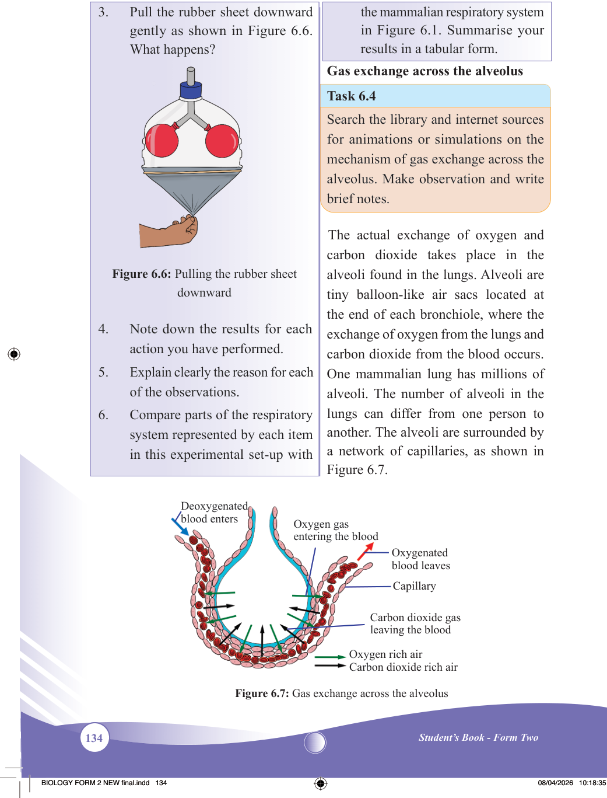
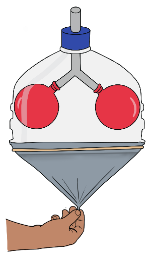

134
Student’s Book - Form Two
Biology for Secondary Schools
3.
Pull the rubber sheet downward
gently as shown in Figure 6.6.
What happens?

Figure 6.6: Pulling the rubber sheet downward
4.
Note down the results for each
action you have performed.
5.
Explain clearly the reason for each
of the observations.
6.
Compare parts of the respiratory system represented by each item
in this experimental set-up with
the mammalian respiratory system
in Figure 6.1. Summarise your
results in a tabular form.
Gas exchange across the alveolus
Task 6.4
Search the library and internet sources
for animations or simulations on the
mechanism of gas exchange across the
alveolus. Make observation and write
brief notes.
The actual exchange of oxygen and carbon dioxide takes place in the alveoli found in the lungs. Alveoli are tiny balloon-like air sacs located at the end of each bronchiole, where the exchange of oxygen from the lungs and carbon dioxide from the blood occurs.
One mammalian lung has millions of alveoli. The number of alveoli in the lungs can differ from one person to another. The alveoli are surrounded by a network of capillaries, as shown in
Figure 6.7.
Oxygen rich air
Carbon dioxide gas leaving the blood
Oxygen gas entering the blood
Oxygenated blood leaves
Deoxygenated blood enters
Capillary
Carbon dioxide rich air
Figure 6.7: Gas exchange across the alveolus
08/04/2026 10:18:35